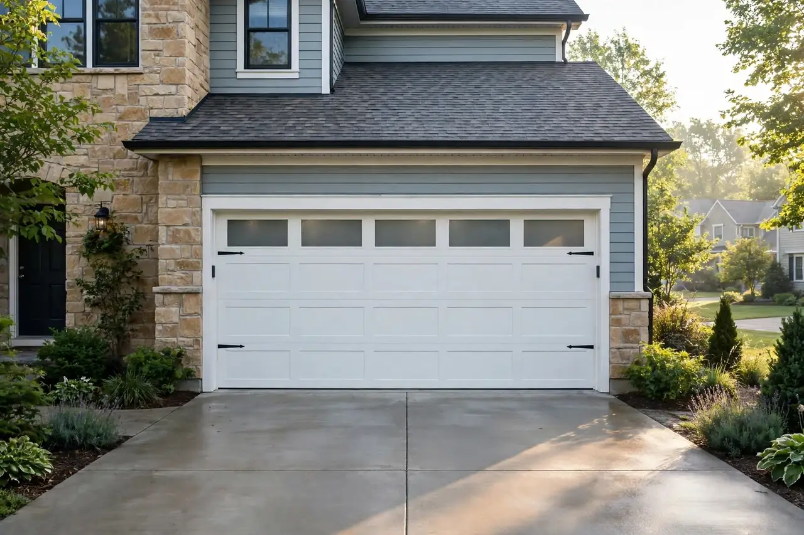
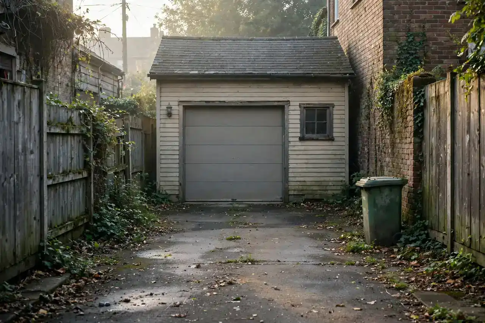
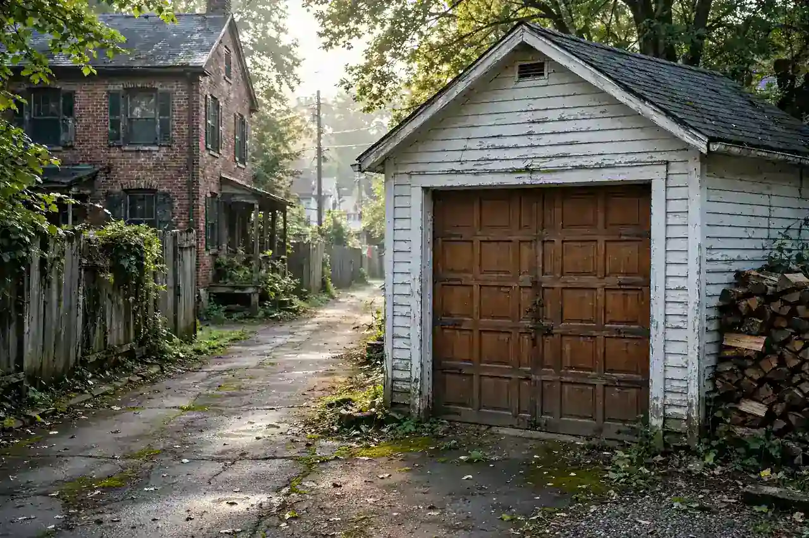

Garage Door Panel Replacement
Garage Door Panel Replacement in Zion, IL
A dented, cracked, or crushed section does not always mean a whole new door. Garage door panel replacement in Zion, IL turns on one question: can a single section be swapped and matched to the door you already have? This page explains the single-panel decision, what matching involves, and how panel damage affects the rest of the door system. When a whole door is the better answer, see garage door installation and replacement in Zion, IL.
Service overview
One Panel or a Whole New Door?
A sectional garage door is a set of hinged sections that travel up the tracks together. Garage door panel replacement means removing one damaged section and fitting a matching replacement, while the rest of the door, its tracks, and its opener stay in place. The words panel and section are used interchangeably for the same part.
Whether a swap is possible depends on three things: how far the damage reaches, how old the door is and what style it is, and whether a matching section is available. Damage confined to one section points toward a swap. Damage across joints, or a door whose profile is no longer made, points toward garage door installation and replacement in Zion, IL. Zion housing runs old: 88.9% of homes were built before 2000 and 64.4% before 1980 (ACS 2020–2024 5-year), so discontinued profiles and faded finishes are the matching questions here, from Central Zion to Beulah Park and Sheridan Hills.

Practical benefits
What Decides a Single-Panel Swap
Four questions decide whether one section can be swapped or whether the conversation becomes a whole-door conversation. None of them has a universal answer: each depends on the door in front of you.
Damage That Stays in One Section
A dent, bend, crack, or crush confined to a single section is the starting point for a swap. Damage that crosses a joint, bends a stile, or reaches the hinges and track changes the scope, because the sections around the damaged one are part of the same moving assembly.
Door Age and Style
Older doors are harder to match. Profiles change, colors fade, and window patterns are revised. A door from the 1960s ranch and split-level stock in Beulah Park raises different matching questions than a 1990s door in Harbor Ridge, even when the damage looks the same.
Matching the Existing Door
A replacement section has to match the existing door in pattern, material, color, windows, and insulation. Matching is an availability question: a section that is no longer made cannot be matched exactly, and a close match is a decision for the homeowner, not an assumption.
When No Matching Section Is Available
Discontinued models and profiles end the single-panel conversation. When no matching section is available, the honest next step is a whole-door decision, covered on the garage door installation and replacement in Zion, IL page, rather than forcing a section that does not fit the door.
What a Visit Typically Involves, in General Terms
How a Panel Decision Is Reached
A panel decision follows a sequence: describe the damage, check how far it reaches, check matching, check the rest of the system, and then decide. Each step can change the answer. That sequence is general-guide language: the exact sequence for any visit is not asserted here as this business's sequence, and the contents of a visit are established on the call.
STEP 01
Describe the Damage
Call (224) 842-7761 and describe what happened and which section is affected: dented, bent, cracked, or crushed, and whether the damage came from a vehicle bump, a falling branch, or something else. The description shapes what gets checked first.
Matching the door
Matching Style, Color, Windows, and Insulation
Panel Pattern
Raised-panel, long-panel, flush, and ribbed patterns are the common sectional faces. The replacement section must carry the same pattern as its neighbors or the mismatch is visible from the street.
Material
Steel, wood, and wood-look or composite-overlay constructions appear in general guides as the common options. Material affects weight, upkeep, and how a section ages, so it is part of matching, not a detail to sort out afterwards. Availability of any material is a question to ask about your door.
Color and Fading
A factory color and a faded finish are not the same thing. Sun and weather fade a door over the years, so a new section in the original color can still look different beside older sections. A close match is a homeowner decision, made with the difference understood before a section is ordered.
Windows and Lites
Top-row windows and divided lites are part of the section, not an add-on. A replacement section for a windowed row must match the window layout and glazing pattern, or the row reads as patched.
Insulation and Layers
Single-layer, double-layer, and triple-layer constructions differ in weight and feel. Matching the existing door's construction matters for balance as well as appearance: a heavier or lighter section changes how the door travels and how the springs carry it.
Section Size
Sections are sized to the opening and to the door. Single-car and double-car doors use different section widths, and older openings are not always standard sizes. The opening is measured rather than assumed, especially on pre-war lots in the older grid.
Hinges at the Joint
Hinges join the sections and carry the fold as the door travels. Damage at a joint, or a hinge bent by the same impact that damaged the panel, affects whether a swap alone restores smooth travel.
Rollers and Track
A bent section can bind rollers and pull the door out of square in the track. The track and rollers on both sides of a damaged section are part of the same check, covered in depth on the garage door off-track repair in Zion, IL page.
Balance After a Swap
A replacement section changes the door's weight distribution. Balance is checked after a swap so the door holds where it is put and the opener is not carrying weight the springs should carry. Balance and spring questions belong on the garage door spring replacement in Zion, IL page.
Discontinued Profiles
When a profile is no longer made, no exact match exists. The options narrow to the closest available section or a whole new door. That bridge is covered on the garage door installation and replacement in Zion, IL page, where materials, styles, and insulation are treated as chooser content.

Where this service fits
Dent, Bend, Crack, and Crush: Damage Types
A Dent From a Vehicle Bump
A shallow dent in a lower section, often after backing into the door, raises the dent-versus-swap question. Dent removal and section replacement are different answers: a shallow dent that has not creased or bent the section may be a repair question, while a creased dent that binds a hinge points toward a swap. The distinction is the depth and shape of the damage, not its size alone.
A Bent Section After an Impact
A bend across a section, or a stile bent out of line, changes how the section folds at the joint. Bent sections bind rollers, load hinges unevenly, and can pull the door out of square. A bent section is usually a replacement question rather than a straightening question, because the fold has to run true.
A Crack in a Section
Cracks and splits let water into the section and weaken it at the joint. Wood sections crack and split as paint fails; steel sections crack at stress points after impact. A cracked section that still travels may still be a swap question, because the crack spreads and the section weakens over time.
A Crushed Section
Crush damage, from a heavy impact or a falling object, deforms the section beyond a dent. Crushed sections rarely travel cleanly, and the impact often reaches hinges, rollers, and track. A crushed section is assessed as part of the whole door system, not as a cosmetic fix.
Local execution
Panel Replacement in Zion's Housing Stock
Zion's housing stock shapes panel work. Nearly half of homes were built before 1970 (48.6%, ACS 2020–2024 5-year), and the eastern and central grid carries alley-loaded detached garages while 1990s and later western subdivisions are attached and garage-forward. Older doors raise matching questions; newer doors raise insulation and weight questions.
Central Zion
Median year built 1950, with some of the oldest streets in the city. Alley-loaded detached garages are characteristic, and door and opener ages vary widely. Discontinued profiles and mixed replacement history are the matching questions here.
South Central Zion
Median year built 1934, the oldest of the city's housing groupings. Alleyways with garages are evidenced, and original openings on 1900–1920 houses may be narrower than modern standards, which affects section sizing.
Beulah Park
Ranch and split-level stock, median year built 1966, on the largest lots among the grid groupings. A mix of attached and detached garages is inferred from the era; 1960s doors that survive are at an age where matching is checked carefully.
Sheridan Hills
Eastern-grid plat with a 1950s to 1970s stock and a median age of 56 years. A mix of detached and attached one- and two-car garages is inferred; matching questions follow the same older-door pattern as the rest of the grid.
Problems we solve
How Panel Damage Affects the Rest of the Door
A damaged panel is rarely only cosmetic. It changes how the door rolls, how it balances, and how it seals. The four effects below are why a panel check looks beyond the panel itself.
Balance and Spring Load
A bent or replaced section changes the weight the springs carry. If the door feels heavy, drifts, or will not stay open, the question is a balance question, covered on the garage door spring replacement in Zion, IL page. Springs work under tension and stay technician-only work.
Track and Roller Binding
A section that no longer runs true binds rollers and stresses the track. Crooked travel, jerky movement, or rollers leaving the rail are track-system symptoms, covered on the garage door off-track repair in Zion, IL page. Do not force a door that binds.
Opener Strain
An opener pulling a bent or unbalanced door works harder than it should, and may reverse, hesitate, or give up. Opener behavior after panel damage is an opener-system question, covered on the garage door opener repair and installation in Zion, IL page.
Seals, Drafts, and Water Entry
A cracked or bent section breaks the seal at the bottom and edges, letting in drafts and water. Seals and weatherstripping are maintenance items, covered on the garage door maintenance and tune-ups in Zion, IL page, where they sit alongside lubrication and hardware checks.


Garage door work in Zion, IL.
Clear explanationsCareful workOpen 24 hours, every dayBased in Zion, IL
Codes and safety
Codes and Safety in Zion
Panel work sits inside the same code and safety rules as any other garage door work in Zion. The statements below are the only code, permit, and licence statements this page makes. A replacement section also changes how the door balances and travels, so the safety checks in the third item matter after any swap.
- Zion has adopted the 2021 International Building Code and 2021 International Residential Code, effective January 1, 2025, with local amendments.
- Illinois does not issue a statewide licence covering garage-door work; the only general building-trade contractor licences issued statewide are for roofing and plumbing. Whether City of Zion contractor registration applies to garage-door contractors was not confirmed — ask the City of Zion Building Department.
- Federal rules (16 CFR Part 1211, UL 325) require residential automatic garage door operators to have entrapment protection: an inherent reversal system plus a secondary entrapment protection device (such as photoelectric sensors or an edge sensor) or a constant-contact control. Test sensors and auto-reverse regularly.
- No Illinois battery-backup mandate for garage door openers was found.
- Whether a City of Zion permit is required for garage-door work, and any fee, was not confirmed on a City source. Contact the City of Zion Building Department, 2828 Sheridan Road, (847) 746-4018, before work begins.

Where we work
Garage Door Work Across Zion, IL
Central ZionSouth Central ZionBeulah ParkJoannaHermonKedron ParkWest ZionHarbor RidgeShepherds CrossingLorelei AcresStonebridge CrossingSunset RidgeCypress ParkCountrywood HillsBrighton PondsButterfield PlaceWestside HillsHighland MeadowsSheridan HillsSheridan LakeSheridan Lake ViewBartletts North Shore Acres
View all Zion areas Notes from local customers
What Zion Customers Say
The crew was proficient and competent, and they made my garage seem better than before.
Premium components were used to rebuild my garage door for reasonably low running cost.
I had a thorough safety check on my garage door, the technician was very detailed.
It depends on the damage, the door, and availability. When damage is confined to one section and a matching section is available, a single-panel swap is the question to ask. When damage crosses joints, or no matching section is available, a whole-door replacement is the more honest answer.
Matching considers the section pattern, material, color, window layout, and insulation together. Whether a match is possible is an availability question: faded finishes may only allow a close match, and discontinued profiles may have no match at all. Availability is checked before a swap is assumed possible.
General guides frame the damage types as dent, bend, crack, and crush. A shallow dent that has not creased the section is different from a creased dent, a bent stile, a spreading crack, or a crushed section. The depth, shape, and reach of the damage decide the answer, not the size of the mark alone.
It can. A replacement section changes weight distribution, which affects balance, track alignment, and how hard the opener works. Balance, track, and opener behavior are typically checked alongside the panel itself, and related questions are covered on the spring, off-track, and opener pages.
When a model or profile is no longer made, no exact matching section exists. The remaining options are the closest available section or a whole new door. Whole-door materials, styles, and insulation are covered on the installation and replacement page.
Keep exploring
Other Garage Door Work in Zion, IL
Open 24 hours, every day
Need Garage Door Help in Zion?
Call (224) 842-7761 and describe the damage: which section, and whether it is dented, bent, cracked, or crushed. Open 24 hours, every day.
Start with the basics
Call Milwaukee Garage Doors Inc
Reach us at (224) 842-7761 for garage door panel replacement in Zion, IL. Describe what the door looks like and what happened, and the call can establish the next step. Open 24 hours, every day.
CALL(224) 842-7761
HOURSOpen 24 hours, every day